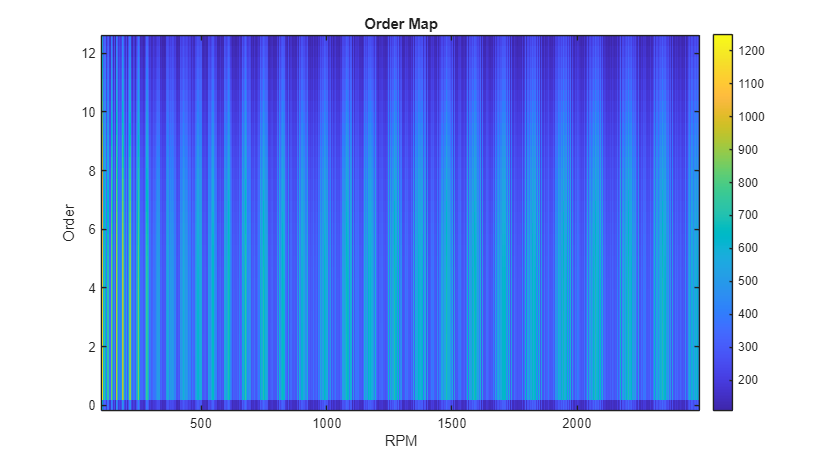

Generate Frequency Order Map for BEV Motor Driveline
Motor torque ripple excites the flexible driveline and produces a time-varying radial load at the motor-shaft bearing. The frequency order map identifies excitation orders across motor speed during vehicle launch.
The workflow generates torque ripple with a field-oriented-control PMSM model, extends its repeating portion, applies it to the mechanical driveline, calculates bearing excitation force, and maps the force amplitude against rotational speed and order.
Quick Setup
- Open the workflow Live ScriptOpen Live Script
Open
generateOrderMap.mlxto configure the torque-ripple, driveline, sampling, and order-map calculations. - Generate motor torque rippleOpen Electrical Model
Set the electrical operating conditions and simulate the vehicle launch to record motor torque.
- Extend torque and simulate the drivelineOpen Mechanical Model
Run
extendMotorTorque, then simulate the flexible driveline to record shaft speed, drive torque, and bearing force. - Calculate and review the order mapOpen Bearing-Force Calculation
Set the rotor and sampling parameters, then review bearing-force amplitude versus motor speed and order.
Key Models and Components
| Model or component | Role | Reference |
|---|---|---|
| FOC PMSM Torque Model | Generates the switching-related motor torque ripple used as mechanical excitation. | Open model |
| Flexible Driveline | Calculates shaft speed and bearing force from the applied motor torque. | View component |
Expected Results

The workflow produces these result types:
- Simulated and extended motor torque waveforms
- Motor-shaft speed and bearing excitation force
- Peak-amplitude frequency order map versus motor speed
Supporting Files
| Purpose | Artifact | Action |
|---|---|---|
| Main workflow | generateOrderMap.mlx | Open Live Script |
| Electrical torque-ripple model | motorDrivelineElectricalTRQControl.slx | Open Model |
| Mechanical torsional model | mechanicalDLTorsionOrderMap.slx | Open Model |
| Torque extension | extendMotorTorque.m | Open File |
| Bearing-force calculation | calculateBearingForce.m | Open File |
Checks Before Using Results
- Confirm the repeated torque segment is in steady operation before extending it.
- Keep the simulation fixed step consistent with the bearing-force sample frequency.
- Verify the final-drive ratio and rotating-mass assumptions match the driveline under study.
- Check that the selected maximum order and overlap resolve the excitation bands of interest.